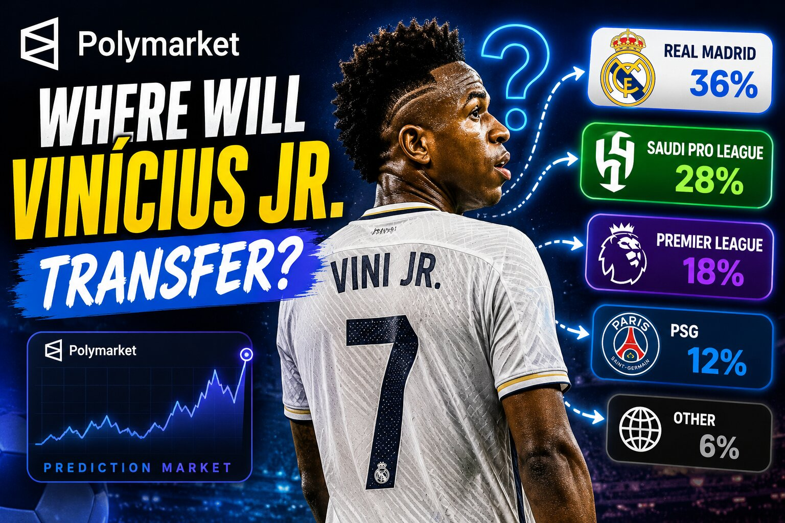
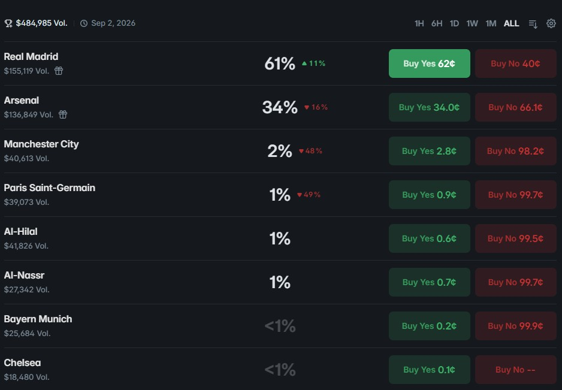
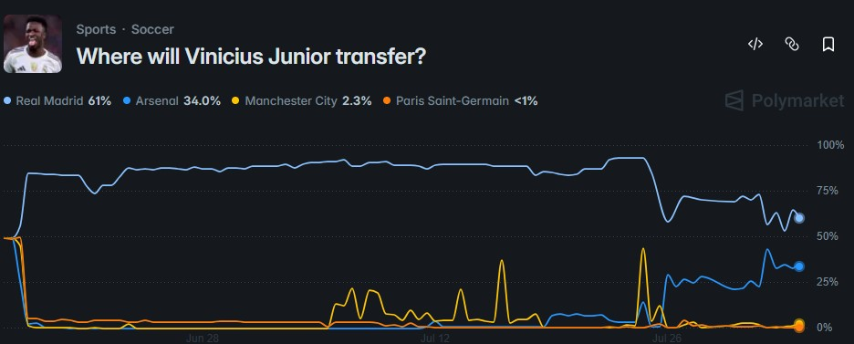

Polymarket's Vinicius Jr. Transfer Market: What the Odds Actually Say

The short answer
Polymarket runs a live market titled "Where will Vinicius Junior transfer?", and Real Madrid is the heavy favorite to keep him, currently priced in the mid-60s percent. Arsenal sits a distant second in the 20s, with Manchester City, PSG, Bayern Munich, Al-Hilal, Al-Nassr, and Chelsea all trading in the low single digits. The contract resolves to Real Madrid by default if no official transfer happens before the close date, which is a big part of why the "stay" option carries such a heavy weight even without a signed contract extension in hand.
How the market is structured
This is an eight-outcome market, not a simple yes/no — Real Madrid, Arsenal, Manchester City, Paris Saint-Germain, Al-Hilal, Al-Nassr, Bayern Munich, and Chelsea are all separately tradeable. Each option has its own Yes and No price, and the percentages across every outcome sum to roughly 100%, since the market as a whole must resolve to exactly one of these clubs or to a catch-all "Other" outcome if Vinicius joins a club not listed, is released, or is between contracts when the market closes.

The order book view shows each club's live price and volume — Real Madrid's Yes side has drawn the bulk of the roughly $31K traded on this market so far.
Reading the price chart
The chart view tells the more interesting story. Real Madrid's line spent most of the market's life trading in the 75–90% range, dipped sharply in late July, and has since recovered into the low-to-mid 60s. Arsenal's line moved in the opposite direction — flat near zero for weeks, then spiking hard in the same window Real Madrid dropped, before settling into the 20–34% range. That kind of inverse relationship between two outcome lines is common in multi-outcome markets: a rumor, a report, or a single data point can pull probability from the favorite straight into whichever alternative the news implicates, and the market usually re-settles somewhere between the pre-news baseline and the post-news spike once more information (or a lack of follow-up) comes in.

Real Madrid's implied probability dropped sharply in late July before partially recovering, while Arsenal's climbed in the same window.
What's actually driving the pricing
Per Polymarket's own market context notes, the case for Real Madrid rests heavily on Vinicius's own public position — he's repeatedly called Madrid his "club of dreams" and reporting indicates he intends to stay through at least the 2026–27 season even without an extension signed yet. His current deal runs through June 2027, and the stated holdup in renewal talks is wages, with figures near €30 million a year reportedly under discussion. Both sides are said to be in no rush to resolve it before the 2026 World Cup, with talks expected to pick back up afterward. The links to other clubs — PSG, Arsenal, Manchester City, and the rest — mostly trace back to speculative reporting from late 2025 into early 2026 that hasn't produced a confirmed bid, which is exactly the kind of pattern that keeps those options priced low but non-zero.
How the market resolves
The rules are specific and worth knowing before reading too much into any single outcome's price: the market resolves to whichever club Vinicius officially joins by September 1, 2026, 11:59 PM ET. If no official move happens by then, it resolves to Real Madrid by default — not because staying is confirmed in any contractual sense, but because "no transfer" and "stays at current club" are treated as the same result for settlement purposes. A transfer to a club not on the list resolves to "Other," as does any scenario where he's released, retires, or is out of contract with no club at close. An official announcement from either Real Madrid or the acquiring club before that date resolves the market immediately, with credible media consensus available as a backup source.
Why this is a useful case study, not just a soccer market
Transfer markets like this one are a clean illustration of how prediction markets price a "status quo" outcome. Because "no move happens" defaults to the incumbent club, a star player's market tends to overweight the current team relative to a pure coin-flip read of transfer speculation — even heavy rumor volume around other clubs usually only nudges the price, rather than flipping the favorite, unless something concrete like a bid or a medical gets reported. That's also why the sharp late-July move is worth noting: it took real news, not just chatter, to pull Real Madrid's price down meaningfully, and the partial recovery afterward suggests the market treated whatever drove that spike as less than fully confirmed.
Where to follow it
The live market, current prices, and full resolution rules are on Polymarket at polymarket.com/event/where-will-vinicius-junior-transfer. Prices shown here reflect a snapshot in time — if you're checking closer to the September 1 close date or after any transfer news breaks, expect the numbers to have moved.
Disclaimer: This post is for informational purposes only and is not financial or betting advice. Prediction market prices reflect trader sentiment at a given moment, not a guarantee of any outcome, and they change continuously as new information comes in. Trading involves risk of loss — confirm current odds, rules, and eligibility directly on polymarket.com before trading.